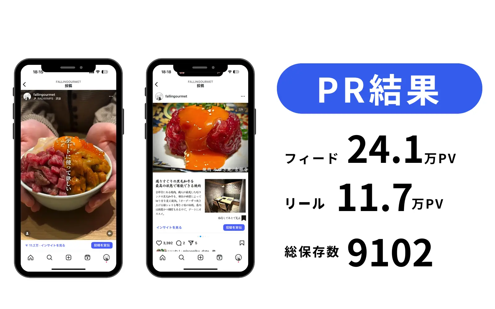

この記事でわかること
- 同じ依頼内容のはずが、見積もりが2倍以上ばらつく理由と金額差の正体
- 発注先4タイプ（フリーランス／動画制作会社／SNS運用代行／広告代理店）の費用の立て方と任せられる範囲
- 依頼範囲別の費用相場と、金額を動かしている5つの要因
- 見積もりを比べる前に揃える4条件と、契約前に決めておく素材・アカウント・音源・出演者の権利
- 制作した動画を広告に転用する前提なら、発注時点で何を決めておくべきか
「1本3万円」が高いか安いかは、単価だけでは判断できない
ショート動画の外注を検討して3社から見積もりを取ると、たいてい金額が大きくばらつきます。月12万円の会社と月45万円の会社が並んでも、提案書を読むかぎりどちらも「企画から納品まで対応」と書かれている、という状態です。
この差の大半は、品質の差ではありません。含まれている本数、撮影が入っているかどうか、修正の回数、投稿・分析まで含むかどうかで説明がつきます。支援会社側の解説でも、条件を揃えると4倍あった見積もりの差が2割程度まで縮むケースが紹介されています（出典：ショート動画制作・外注の費用相場｜業者の選び方と依頼の流れの正解｜株式会社solezore）。
やることは1つです。総額を「公開できる状態になった1本あたり」に割り戻してから比べる。これをしないまま総額の安いほうを選ぶと、本数が半分で単価は同じ、あるいは高い、ということが普通に起きます。
この記事では、割り戻すために必要な情報と、その情報を引き出すための聞き方を順に整理します。あわせて、当社が広告運用も手がけている立場から、制作した動画を広告に流す前提があるかどうかで発注条件が変わるという論点も扱います。ここは制作だけを請ける会社からは出てきにくく、後から権利を取り直すことになりやすい部分です。
発注先は4タイプ、見積もりの立て方がそれぞれ違う
ショート動画を外に出す相手は、大きく4タイプに分かれます。タイプが違えば見積もりの立て方そのものが違うため、同じタイプを3社並べても金額の差しか分かりません。異なるタイプを混ぜて取るほうが、自社に必要な支援範囲が見えてきます。
| 発注先 | 費用の立て方 | 任せられる範囲 | 向いている状況 |
|---|---|---|---|
| フリーランス | 1本あたりの編集単価 | 編集が中心。企画・台本は自社 | 撮影を社内でできる／本数を出したい |
| 動画制作会社 | 1本あたり、または撮影1日のパッケージ | 企画・撮影・編集。投稿は別途 | 撮影ごと任せたい／品質を安定させたい |
| SNS運用代行会社 | 月額（含まれる本数で決まる） | アカウント設計・企画・制作・投稿・レポート | 社内に担当者を置けない |
| 広告代理店 | 制作費＋広告費（＋運用手数料） | 制作した動画の広告配信と改善 | オーガニックの伸びを待てない／獲得が目的 |
フリーランスは1人に依存する体制になるため、月8本以上を安定して出すなら2人に分ける前提で考えたほうが安全です。制作会社・運用代行会社は複数人体制のぶん担当交代に強い一方、横型の映像制作を長く手がけてきた会社が、そのまま縦型で強いとは限りません。引いた構図で丁寧に撮る技術は、ショート動画では逆に働くことがあります。実績として見せてもらうのは「縦型のショート動画」に限定してください。

依頼範囲別の費用相場
依頼する範囲ごとの目安は次のとおりです。支援会社が公開している相場と、制作会社側が公開している相場を並べています。
| 依頼範囲 | 費用の目安 | 補足 |
|---|---|---|
| 編集のみ（カット＋テロップ） | 1本 3,000〜5,000円 | 素材は自社で撮影して渡す |
| 編集のみ（演出あり） | 1本 8,000〜1万5,000円 | 効果音・図版の作成を含む |
| 撮影＋編集 | 1本 2万〜5万円 | 撮影スタッフが現地に出る |
| 撮影1日のパッケージ | 15万〜30万円 | 8〜12本を1日でまとめ撮り |
| 企画から投稿・分析まで | 月 30万〜60万円 | 台本作成・投稿作業・月次報告を含む |
（出典：ショート動画制作・外注の費用相場｜業者の選び方と依頼の流れの正解｜株式会社solezore）
制作会社側の解説でも近いレンジが示されています。フリーランスへの依頼が1本5,000〜3万円程度、編集のみなら1本3,000〜1万円以上、制作会社に企画から撮影まで頼む場合が1本3万〜10万円以上、SNS運用代行まで含めると月額20万〜60万円以上、広告配信まで含めると月額50万円〜という整理です（出典：ショート動画制作の外注相場は？依頼先別の費用と失敗しない選び方｜能登印刷株式会社）。
単価を下げる一番効く手は、撮影をまとめることです。1本ずつ別日に撮ると、そのたびにセッティングと移動の費用が乗ります。企画を4〜10本ぶん先に用意して半日〜1日で撮り切ると、1本あたり1万5,000〜3万円まで下がるとされています。撮影を外に出す場合でも、社内で撮る場合でも同じです。
金額を動かしている5つの要因
見積もりの数字を分解すると、動いている変数は多くありません。次の5つを確認すれば、たいていの差は説明がつきます。
含まれる本数と、その数え方
月8本と月16本では、同じ総額でも実質の単価が2倍違います。あわせて数え方も確認してください。撮影した本数なのか、投稿された本数なのか、TikTokとInstagramに同じ動画を出したら2本と数えるのかで、実際に手元に残る量が変わります。
「必要に応じて」「月◯本程度」という表記は、本数の約束ではありません
撮影が入るかどうか
人と機材が動くぶん、1本あたり1万5,000円以上の差が出ます。社内で撮れるなら編集だけを外に出すほうが安く収まります。寄って撮る・明るい場所で撮る・2〜3アングル用意する。この3点が守れていれば、スマートフォンの映像でも編集素材としては成立します。
まず1本試し撮りして、編集に出せるか判断する
修正の回数
2回までを上限とする契約が一般的で、3回目以降は1回あたり数千円の追加になります。修正が増える原因は編集の腕ではなく、依頼の段階で何を作るか決まっていないことです。台本を先に確認しておけば、修正は表現の調整だけで済みます。
「修正無制限」と書かれている場合、その分は単価に乗っています。回数を絞って単価を下げる交渉ができる余地があります。
企画・台本を誰が書くか
トレンドの調査と台本作成を任せるとディレクション費が乗ります。ここを自社で持つと費用は下がりますが、毎月10本ぶんのネタを社内で出し続けられるかを先に確認してください。企画が止まると、編集単価が安くても投稿は止まります。
投稿・分析まで含むか
データを納品して終わりか、自社アカウントにログインして投稿・コメント対応・月次レポートまで行うかで、月額の水準が変わります。納品だけの契約なら、投稿を誰がいつ出すかを社内で決めておかないと、編集済みの動画が溜まるだけになります。
見積もりを比べる前に揃える4条件
相見積もりを取るときは、各社に自由に提案させるのではなく、同じ依頼書を渡してください。条件が違う見積もりは、並べても比較になりません。依頼書に書くのは次の4つです。
- 月あたりの必要本数（数え方も指定する。「投稿ベースで月12本」など）
- 撮影を含むかどうか（含まない場合、渡す素材の形式と本数も書く）
- 修正回数の上限（3回目以降の追加費用も明記させる）
- 素材の権利とアカウント名義の条件（後述。ここは最初に出す）
4つ目を最初に書いておくのがコツです。契約直前に持ち出すと条件が通らないことがあります。
見積もりに「書かれていない作業」を探す
金額の明細より、明細に載っていない工程のほうが後で効いてきます。次の4つは特に見落とされます。
- 台本の作成——含まれない場合は社内で用意する。ここが抜けていると、撮影当日に内容を決めることになります
- 投稿の作業——編集のみの契約には入っていません。誰がいつ出すかを決めておきます
- 撮影素材の保管期間——期間指定があると、過ぎた後の再編集は撮り直しになります
- 月次のレポート——含まれない契約は単価が下がる代わりに、数字は自社で見ることになります
依頼から1本目の納品までの期間
打診から1本目が上がるまでは、おおむね3〜4週間を見ておいてください。内訳は、打診と見積もりで1週間、契約と台本確認で1週間、撮影が1日（日程調整に2週間以上かかることが多い）、編集と修正で1〜2週間です。キャンペーンの開始日が決まっている場合は、そこから逆算して1か月半前には動き出す必要があります。
契約前に決める権利まわり——素材・アカウント・音源・出演者
金額の交渉より優先して決めるべき項目です。ここが曖昧なまま進めると、契約が終わったときに手元に何も残らない、という結果になります。
契約書に入れておく項目
素材とアカウント
- 完成品だけでなく、撮影した元素材の引き渡しを条件に入れる
- 元素材の保管期間と、契約終了時の受け渡し方法を決める
- アカウントは自社名義で開設し、制作会社には権限を付与する形にする
- 二段階認証の認証先を、担当者個人の端末ではなく自社管理のものにする
出演者と音源
- 出演者（社員・モデル・インフルエンサー）の二次利用の範囲と期間を文書で決める
- 退職した社員が映っている動画をどう扱うかを、あらかじめ決めておく
- BGM・効果音のライセンスが、投稿以外の用途にも及ぶかを確認する
- 制作物に使うフォント・素材の商用利用ライセンスの所在を確認する
音源は見落とされやすい項目です。各プラットフォームが用意している音源ライブラリは、その面での通常投稿には使えても、広告配信や自社サイトへの転載といった用途までは許諾範囲に含まれないことがあります。広告に回す可能性が少しでもあるなら、最初から商用利用が明示されたライセンス音源で作ってもらってください。後から差し替えると、編集をやり直すことになります。
個人のクリエイターに発注する場合
フリーランスや個人事業主に継続して発注する場合は、下請法とは別に「フリーランス・事業者間取引適正化等法（フリーランス新法）」の対象になります。業務委託をしたときに給付の内容・報酬の額・支払期日などを書面や電磁的方法で明示すること、報酬の支払期日を成果物を受け取った日から60日以内のできる限り短い期間内に定めることなどが、発注側の義務として定められています（出典：フリーランス法特設サイト｜公正取引委員会）。口約束で本数と単価だけ決めて進めている場合は、この機会に書面の形を整えておくのが安全です。
当社は法律事務所ではありません。ここで挙げているのは実務上つまずきやすい論点の整理であり、個別の契約条項が自社の取引で適法・有効かどうかの判断は、弁護士等の専門家にご確認ください。
広告に転用する前提なら、発注条件が最初から変わる
ここは制作だけを請ける会社からは出てきにくい論点です。作ったショート動画を広告として配信する可能性があるなら、発注の時点で条件を足しておく必要があります。後から取り直すと、出演者への再交渉と音源の差し替えで、制作費と同じくらいの手間がかかります。
発注書に足しておく3項目
- 二次利用の範囲に「有償の広告配信」を明記する——出演者の同意、素材の利用許諾、音源のライセンスの3つすべてについて必要です
- 尺とアスペクト比のバリエーションを納品物に含める——同じ素材から、面ごとの推奨仕様に合わせた書き出しを複数もらっておくと、配信の段階で作り直さずに済みます
- 冒頭2〜3秒だけを差し替えた版を複数もらう——広告は冒頭で離脱するかどうかがほぼすべてです。訴求違いの冒頭を3パターン持っていると、検証の回転が上がります
本数を増やすか、配信に回すか
予算配分の話もここに関わります。オーガニックのショート動画は、当たり外れの分散が大きい施策です。月12本を月20本に増やしても、伸びる本数が比例して増えるとは限りません。一方で広告は、届く量を費用で買える施策です。
当社が実務で見ている目安として、すでに反応の良い動画が数本ある状態なら、制作本数を増やすより、その数本を広告に回すほうが早く数字が動くことが多いと考えています。逆に、まだ勝ち筋が見えていない段階で配信費を積むと、外れの素材に費用を払うことになります。本数で当たりを探す段階と、当たった素材に配信費を寄せる段階を分けて考えてください。この判断を後から入れるには、前述の二次利用の条件が整っていることが前提になります。
内製と外注の分け方と、外注しても残る工数
社内で作れば無料、という比較にはなりません。担当者の時間にも費用が乗っています。時給2,500円で換算した場合、社内制作でも1本あたり4,000〜7,500円相当のコストがかかるという試算があります（出典：ショート動画制作・外注の費用相場｜業者の選び方と依頼の流れの正解｜株式会社solezore）。
| 体制 | 1本あたりの費用 | 社内に残る時間（1本あたり） |
|---|---|---|
| すべて社内（時給2,500円換算） | 実質 4,000〜7,500円 | 1.5〜3時間 |
| 編集だけ外注 | 3,000〜1万5,000円 | 30〜50分 |
| 撮影から外注 | 2万〜5万円 | 10分程度 |
注目したいのは、編集だけを外に出しても総額はさほど変わらないのに、社内の時間が大きく空くという点です。空いた時間を企画と撮影に回せば、同じ費用で本数が増えます。
もうひとつ、外注しても社内の時間はゼロになりません。素材の受け渡し、内容の確認、修正の指示で月3〜5時間は残ります。ここをゼロで計画すると、窓口が不在になって進行が止まります。担当者を1人決めて、その時間を業務として確保してください。
削るなら作業、残すなら判断。何を撮るか、誰が出るか、何を伝えるかは社内の判断です。カット・テロップ・効果音・書き出しは作業です。この線引きが曖昧な契約は、3か月ほどで「動画は出ているのに何も動かない」状態になります。
発注前チェックリスト
打診する前に社内で決めること
依頼書に書く条件
- 月あたりの本数と、その数え方（撮影ベースか投稿ベースか）
- 撮影を含めるかどうか。含めない場合に渡せる素材の状態
- 修正回数の上限と、超過時の単価
- 素材の権利・アカウント名義・広告転用の可否
提案を受け取ったら確認すること
- 総額を公開1本あたりに割り戻した数字
- 台本作成・投稿作業・素材保管・月次レポートが含まれるか
- 縦型ショート動画の実績を3本、数字つきで見せてもらう
- 担当者が何アカウントを掛け持ちしているか
社内で用意して渡すもの
- 台本の下書き、または伝えたい論点のメモ
- 証明に使える材料（実績・仕組み・お客様の声）
- 過去に反応が良かった投稿
- 使ってはいけない表現の一覧（業種による制約がある場合）
最後の「証明に使える材料」は、社内にしか存在しません。これを渡さずに「良い感じの動画を」と依頼すると、どの会社が作っても当たり障りのない構成が戻ってきます。依頼先の力量以前に、材料がない状態では作れません。
LnXの見解
ショート動画の外注相談を受けていて多いのは、見積もりの金額を比べる前に、社内に何を残すかが決まっていないケースです。撮影を社内でできるかどうか、月に何本ぶんの企画を出せるか、投稿を誰が押すか。この3つが決まっていれば、見積もりの比較は残った工程を埋めるだけの作業になります。逆に決まっていない状態で3社の提案を並べても、書いてあることが違うので判断材料になりません。
もうひとつ、広告に出す可能性があるなら、その条件は最初の契約に入れてください。当社は広告運用も請けている関係で、「良い動画があるので配信したい」というご相談を受けることがあります。そこで音源が広告に使えない、出演者の同意が投稿までしか及んでいない、という理由で作り直しになるのを何度か見てきました。制作費を払ったうえで、もう一度制作費を払うことになります。
LnXでは、自社でグルメアカウントを運営してフォロワー2.1万人・月間リーチ約150万まで育ててきました。企画・撮影・編集・投稿・分析まで自分たちで手を動かしているので、どの工程にどれだけ時間がかかるかを実感として持っています。そのうえで広告配信まで扱っているため、「本数を増やすべきか、いま当たっている動画を配信に回すべきか」という配分の相談にも同じ窓口で答えられます。他社の見積もりを並べた状態でのご相談も歓迎です。
よくある質問
Q ショート動画1本の制作費はいくらですか？
編集のみで1本3,000〜1万5,000円、撮影を含めると1本2万〜5万円が目安です。撮影を1日にまとめて8〜12本撮る形にすると、1本あたり1万5,000〜3万円まで下がります。単発で1本ずつ頼むより、まとめるほうが安く済みます。月額契約の場合は、企画から投稿・分析まで含めて月30万〜60万円が目安です。
Q フリーランスと制作会社、どちらに頼むべきですか？
撮影を社内でできるなら、編集をフリーランスに頼む形が最も安く収まります。ただし1人に依存する体制になるため、月8本以上を安定して出すなら2人に分ける形も検討してください。撮影ごと任せたい場合や、担当交代があっても品質を保ちたい場合は制作会社です。投稿と分析まで社内に人を置けないなら、運用代行会社という選択になります。
Q 撮影は自社でやったほうが安く済みますか？
撮影スタッフが現地に出るかどうかで1本あたり1万5,000円以上の差が出るため、社内で撮れるなら安く収まります。判断の目安は、寄って撮る・明るい場所で撮る・2〜3アングル用意する、の3点が守れるかどうかです。まず1本だけ試し撮りして編集に出してみると、成立するかどうかがはっきりします。ここで判断が変われば、費用は大きく変わります。
Q 作った動画を、そのまま広告に使えますか？
契約の内容によります。確認が必要なのは、出演者の二次利用同意、撮影素材の利用許諾、BGM・効果音のライセンスの3つです。プラットフォームが用意している音源は、通常投稿では使えても広告配信までは許諾範囲に含まれないことがあります。広告に回す可能性があるなら、発注書の二次利用の範囲に「有償の広告配信」を明記し、商用利用が明示された音源で作ってもらってください。
Q 依頼してから1本目が上がるまで、どのくらいかかりますか？
3〜4週間が目安です。打診と見積もりに1週間、契約と台本の確認に1週間、撮影日の調整に2週間以上かかることが多く、編集と修正に1〜2週間です。台本の確認工程を省くと撮影後の修正が増えるため、短縮するならここではなく、撮影日の調整と社内の意思決定を早めるほうが効きます。
Q 月に何本あれば足りますか？
目的によって変わります。新規のリーチを広げたい段階では週2〜3回、月10本以上が一つの目安です。同じ内容の動画は数週間で反応が落ちるため、本数が少ないと検証の回数を確保できません。一方、すでにファンがついていて質を重視する段階なら月4〜8本でも機能します。契約する本数は、目的と、社内で企画を出せるペースの両方から逆算してください。